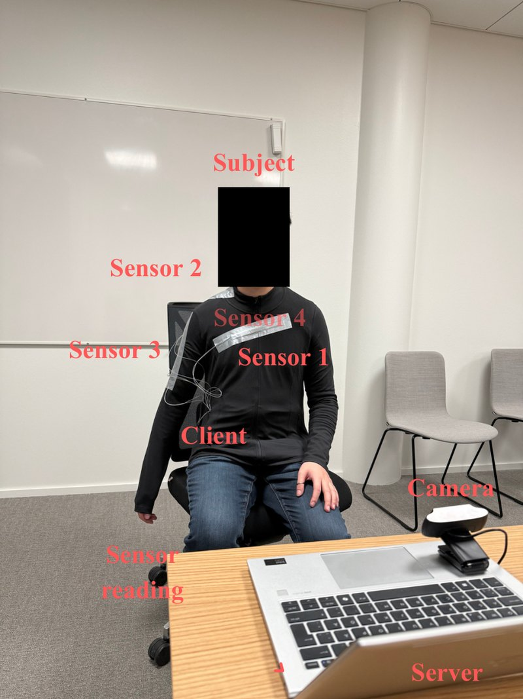
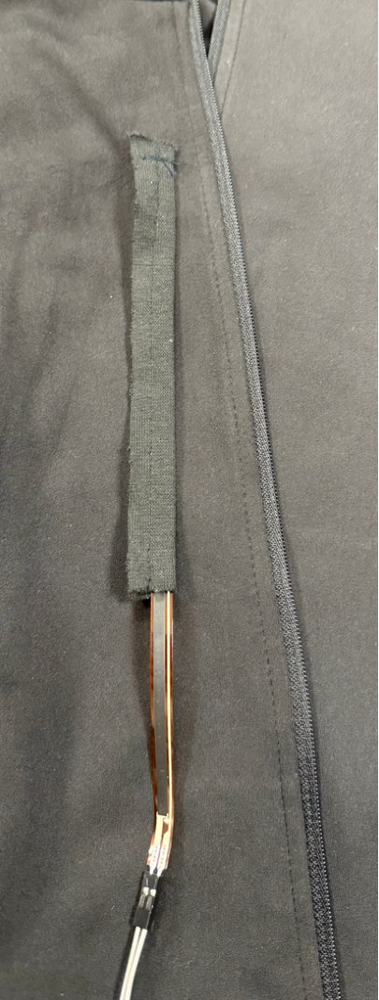
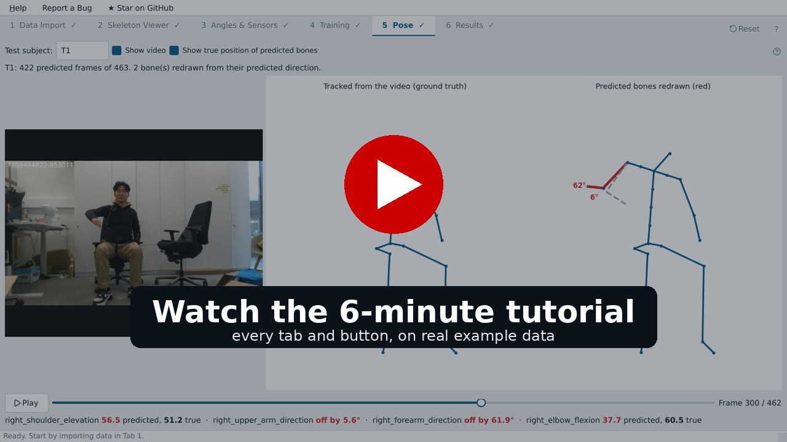

Open source · Windows app · arXiv 2026
A No-Code Toolchain for Validating
Wearable Motion Sensing Systems
Film a person wearing your garment with an ordinary webcam while its sensors are logged. The toolchain turns the video into ground-truth motion, trains a model that reads that motion from the sensors alone, and tells you how well your garment works. No motion-capture lab, no code.
What you need
A garment, a webcam, a laptop.
Hover over a part of the setup to see what it does.

- Sensors on a garmentAny channels you want to test: here four resistive flex sensors in fabric sleeves on a compression shirt, around the shoulder.
- A microcontrollerReads the sensors and sends each sample, stamped with the time, to the laptop.
- A webcamAn ordinary USB or built-in camera filming the person. Its video becomes the ground truth.
- A laptopLogs the sensor CSV and the video with a timestamp for every frame, on the same clock. Afterwards it runs the toolchain.

Then record the movements you care about
Photos from Liu, Zhang et al., EICS 2026 (CC BY), faces masked.
How it works
Three files in. A test report out.
Click a step.
Interactive tutorial
Six tabs, left to right.
Pick a tab, then click the numbered points on the screen.
What the model learns
Pick bones, not channels.
In Tab 3 you click the bones the garment should sense. Each one adds where it points and the angle at its joint.
Seen from the camera: the person's right is on the left.
Right upper arm, as the model sees it
Elevation is how far the arm is raised, whichever way. Direction is a unit vector in the chest's frame: forward, up and outward. Both change smoothly however the arm moves, which is what makes them learnable.
See a prediction
The predicted arm, drawn into the skeleton.
Tab 5 of the app, running in your browser. Play, scrub, and drag a skeleton to turn both.
Example data: a model trained on three short practice recordings of one person, tested on a fourth. It shows what the view looks like, not how accurate a garment can be.
In use
Iterate on sensor layouts.
In our EICS 2026 study, three designers placed four flex sensors on the shoulder, tested each layout, and revised it. Every layout was scored the same way: the mean angle error of the predicted shoulder motion.
Layouts from Liu, Zhang et al., Exploring Human-AI Collaboration in E-Textile Design, PACMHCI EICS 2026 (CC BY). Sensor 1 to 4 in dark red, orange, yellow and green; front and back of the right shoulder.
User study
Ten people, no help, first try.
Each participant imported two sessions, picked targets and inputs, trained a model and read the results, twice.
System Usability Scale
No link with programming experience: the three least experienced participants scored 67.5 to 72.5.
“No coding, all of the operations are GUI.”Study participant
Get started
From download to first report.
Download
Get the Windows build from the latest release, unzip it, and run ETextileValidation.exe. Example data is in the same release.
Record
Sync both computers' clocks, then record. Each session is three files: the video, the sensor CSV, and the time of every video frame. The repository includes the recording scripts.
Input formatRun
Add the sessions in Tab 1 and work left to right. The first extraction takes about 2.5 times the length of the video; everything after that is quick.
Interactive tutorialOn macOS or Linux, or from source
git clone https://github.com/yaozhang182/etextile-validation-gui.git cd etextile-validation-gui pip install -r requirements.txt python app.py
Detailed tutorial video
Every tab and button, in six and a half minutes.

Plays from YouTube when you click. Open on YouTube.
Cite
If the toolchain helps your work.
@misc{zhang2026nocode,
title = {A No-Code Toolchain for Validating Wearable Motion Sensing Systems},
author = {Zhang, Yao and Liu, Zhuchenyang and Xiao, Yu},
year = {2026},
eprint = {2611.28027},
archivePrefix = {arXiv},
primaryClass = {cs.HC},
doi = {10.48550/arXiv.2611.28027},
url = {https://arxiv.org/abs/2611.28027}
}
@article{liu2026exploring,
title = {Exploring Human-AI Collaboration in E-Textile Design: A Case Study
on Flex Sensor Placement for Shoulder Motion Detection},
author = {Liu, Zhuchenyang and Zhang, Yao and He, Yalan and Paasio, Hilla
and Li, Changyi and Semjonova, Guna and Xiao, Yu},
journal = {Proceedings of the ACM on Human-Computer Interaction},
volume = {10},
number = {4},
articleno = {EICS019},
year = {2026},
doi = {10.1145/3816771}
}